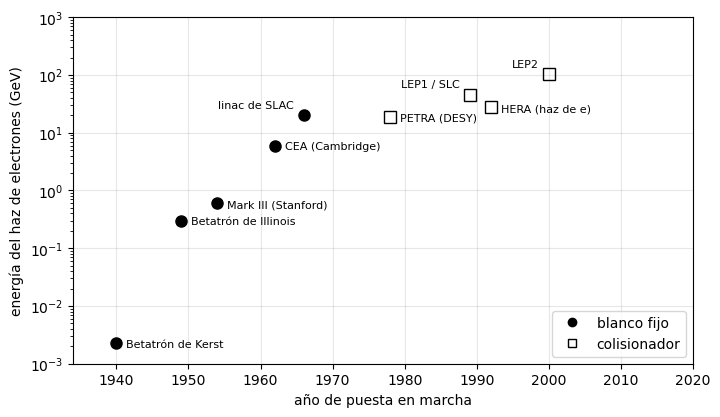
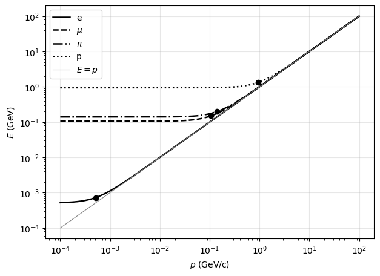
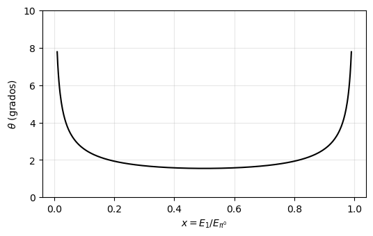

Partículas — boletín I#
Cinemática relativista: unidades naturales, cambio de sistema de referencia y desintegraciones a dos cuerpos#
José A. Hernando
Departamento de Física de Partículas. Universidade de Santiago de Compostela
Curso 2026/27
# Configuración e imports
%matplotlib inline
import numpy as np
import matplotlib.pyplot as plt
# Constantes (MeV, fm, s) y masas (MeV)
hbarc = 197.3 # MeV fm
c = 3.0e8 # m/s
m_e, m_mu, m_pi, m_pi0 = 0.511, 105.66, 139.57, 134.98
m_K, m_p, m_L = 493.68, 938.27, 1115.68
def pstar(ma, mb, mc):
# momento de las hijas en a -> b + c, en el sistema de reposo de a (ejercicio 4)
return np.sqrt((ma**2 - (mb + mc)**2) * (ma**2 - (mb - mc)**2)) / (2 * ma)
def Estar(ma, mb, mc):
# energía de b en a -> b + c, en el sistema de reposo de a (ejercicio 4)
return (ma**2 + mb**2 - mc**2) / (2 * ma)
Notación#
Unidades. Unidades naturales, \(\hbar = c = 1\), salvo que se diga lo contrario: masas, momentos y energías en eV y sus múltiplos.
Partículas. \(e\), \(\mu\) y \(\tau\) son los leptones con carga negativa, y \(e^+\), \(\mu^+\) y \(\tau^+\) sus antipartículas. El signo \(+\) separa todas las partículas, también las del estado inicial.
Sistemas de referencia. LAB es el del laboratorio, en el que está el detector. CM es el del centro de masas, en el que el momento total es cero; en una desintegración, el de reposo de la madre. Las magnitudes en el CM llevan asterisco (\(p^*\), \(E^*\), \(\theta^*\)). Salvo que se diga lo contrario, los datos están en el LAB.
Constantes. \(\hbar c = 197.3\) MeV fm; \(hc = 1239.7\) MeV fm; \(\hbar = 6.582\times10^{-22}\) MeV s; \(c = 3.0\times10^{8}\) m/s; 1 b \(= 10^{-24}\) \(\mathrm{cm}^2 = 100\) \(\mathrm{fm}^2\).
Masas. \(m_e = 0.511\) MeV, \(m_\mu = 105.66\) MeV, \(m_{\pi^\pm} = 139.57\) MeV, \(m_{\pi^0} = 134.98\) MeV, \(m_{K^\pm} = 493.68\) MeV, \(m_p = 938.27\) MeV, \(m_\Lambda = 1115.68\) MeV.
Tamaños. átomo, \(\sim10^{5}\) fm; núcleo, \(\sim5\) fm; protón, \(0.84\) fm; electrón y quark, \(< 10^{-3}\) fm (cota experimental).
[>] Ejercicio 1 — Unidades naturales
Expresa en unidades naturales, es decir, como una potencia de la unidad de energía: (a) el femtosegundo y el fermi, en potencias de GeV; (b) el metro y el segundo, en potencias de MeV; (c) el barn, en función de GeV.
fm = 1 / hbarc # MeV^-1
print('1 fm = {:.2f} GeV^-1'.format(1e3 * fm))
print('1 fs = {:.2e} GeV^-1'.format(c * 1e-15 * 1e15 * 1e3 * fm))
print('1 m = {:.2e} MeV^-1, 1 s = {:.2e} MeV^-1'.format(1e15 * fm, c * 1e15 * fm))
print('1 b = {:.2e} GeV^-2, 1 GeV^-2 = {:.3f} mb'.format(100 * (1e3 * fm)**2, 1e3 / (100 * (1e3 * fm)**2)))
1 fm = 5.07 GeV^-1
1 fs = 1.52e+09 GeV^-1
1 m = 5.07e+12 MeV^-1, 1 s = 1.52e+21 MeV^-1
1 b = 2.57e+03 GeV^-2, 1 GeV^-2 = 0.389 mb
Solución
Las dos constantes de conversión son \(\hbar c = 197.3\) MeV fm \(= 1\) y \(c = 3.0\times10^{8}\) m/s \(= 1\).
\(1\) fm \(= \dfrac{1}{197.3}\) \(\mathrm{MeV}^{-1} = 5.07\) \(\mathrm{GeV}^{-1}\). Un fs equivale a la distancia que recorre la luz en ese tiempo, \(3.0\times10^{-7}\) m \(= 3.0\times10^{8}\) fm, luego \(1\) fs \(= 3.0\times10^{8}\times 5.07\) \(\mathrm{GeV}^{-1} = 1.52\times10^{9}\) \(\mathrm{GeV}^{-1}\) (o bien, con \(\hbar = 6.58\times10^{-25}\) GeV s, \(1\) fs \(= 10^{-15}/\hbar\)).
\(1\) m \(= 10^{15}\) fm \(= 5.07\times10^{12}\) \(\mathrm{MeV}^{-1}\); \(1\) s \(= 3.0\times10^{8}\) m \(= 1.52\times10^{21}\) \(\mathrm{MeV}^{-1}\).
\(1\) b \(= 100\) \(\mathrm{fm}^2 = 100\times(5.07)^2\) \(\mathrm{GeV}^{-2} = 2.57\times10^{3}\) \(\mathrm{GeV}^{-2}\), o bien \(1\) \(\mathrm{GeV}^{-2} = 0.389\) mb.
Las longitudes y los tiempos van como \(E^{-1}\) y las áreas como \(E^{-2}\): en unidades naturales solo queda una unidad independiente, y se elige la energía.
[>] Ejercicio 2 — Un Boeing y un mosquito
Compara la energía cinética de un Boeing 747, cuya masa es de 400 toneladas, a su velocidad de crucero de 850 km/h, con la energía liberada en la aniquilación de un mosquito con un antimosquito, siendo la masa del mosquito de 1 mg. (El avión no es relativista.)
T_boeing = 0.5 * 4e5 * (850 / 3.6)**2 # J
E_mosq = 2 * 1e-6 * c**2 # J
print('T = {:.1e} J, E = {:.1e} J, E/T = {:.0f}'.format(T_boeing, E_mosq, E_mosq / T_boeing))
T = 1.1e+10 J, E = 1.8e+11 J, E/T = 16
Solución
\(T_{\rm Boeing} = \tfrac12 M v^2 = \tfrac12 (4\times10^{5}\ \mathrm{kg})(236\ \mathrm{m/s})^2 = 1.1\times10^{10}\) J. En la aniquilación toda la masa, 2 mg, se convierte en energía: \(E = 2 m c^2 = 2\times10^{-6}\ \mathrm{kg}\,(3\times10^{8})^2 = 1.8\times10^{11}\) J, unas 16 veces la energía cinética del avión. La masa es una forma de energía enormemente concentrada: el factor \(c^2\) compensa de sobra los once órdenes de magnitud que hay entre un mosquito y un avión.
[>] Ejercicio 3 — Energía y velocidad
Una partícula de masa 3 GeV tiene, en el laboratorio, un momento de 4 GeV/c en la dirección \(z\). ¿Cuáles son su energía y su velocidad? Da también sus factores \(\gamma\) y \(\gamma\beta\).
Solución
\(E = \sqrt{p^2 + m^2} = \sqrt{16+9} = 5\) GeV; \(\beta = p/E = 0.8\) (en la dirección \(z\)); \(\gamma = E/m = 5/3 = 1.67\); \(\gamma\beta = p/m = 4/3\). El triángulo \((3,4,5)\) es el mismo de siempre: \(m\), \(p\) y \(E\) son los dos catetos y la hipotenusa de \(E^2 = p^2 + m^2\).
[>] Ejercicio 4 — Momento en el CM de una desintegración a dos cuerpos
Sea una partícula \(a\) de masa \(m_a\) que se desintegra en otras dos, \(a \to b + c\), de masas \(m_b\) y \(m_c\). Da las expresiones de la energía y del momento de \(b\) y de \(c\) en el centro de masas (CM), es decir, en el sistema en el que \(a\) está en reposo, y demuestra que el momento \(p^*\) de las dos partículas hijas en ese sistema es
# Comprobación numérica con K -> mu + nu (m_nu = 0): E*_mu^2 - p*^2 = m_mu^2
ps, Es = pstar(m_K, m_mu, 0), Estar(m_K, m_mu, 0)
print('p* = {:.1f} MeV, E*_mu = {:.1f} MeV, sqrt(E*^2 - p*^2) = {:.2f} MeV'.format(ps, Es, np.sqrt(Es**2 - ps**2)))
p* = 235.5 MeV, E*_mu = 258.1 MeV, sqrt(E*^2 - p*^2) = 105.66 MeV
Solución
En el CM, \(p_a = (m_a, \vec 0)\) y \(\vec p_b = -\vec p_c\), de modo que las dos hijas tienen el mismo momento en módulo, \(p^*\). De \(p_c = p_a - p_b\) y elevando al cuadrado, \(m_c^2 = m_a^2 + m_b^2 - 2m_aE^*_b\), luego
\(p^{*2} = E^{*2}_b - m_b^2 = \dfrac{(m_a^2 + m_b^2 - m_c^2)^2 - 4m_a^2m_b^2}{4m_a^2}\); el numerador es una diferencia de cuadrados, \((m_a^2 + m_b^2 - m_c^2 - 2m_am_b)(m_a^2 + m_b^2 - m_c^2 + 2m_am_b) = [(m_a-m_b)^2 - m_c^2][(m_a+m_b)^2 - m_c^2]\), que reordenado da la expresión pedida. Caso particular útil, \(m_c = 0\): \(p^* = (m_a^2 - m_b^2)/(2m_a)\).
Obsérvese que \(p^*\) solo depende de las tres masas: en una desintegración a dos cuerpos la cinemática está completamente fijada, y lo único libre es la dirección de emisión.
[>] Ejercicio 5 — Desintegración $K^- \to \mu + \bar\nu_\mu$
Considera la desintegración \(K^- \to \mu + \bar\nu_\mu\).
¿Se trata de una interacción fuerte o débil?
Calcula la energía y el momento del \(\mu\) y del \(\bar\nu_\mu\) en el CM (el sistema en el que el \(K^-\) está en reposo).
Si en el laboratorio el \(K^-\) tiene un momento de 5 GeV/c, ¿cuál es el momento máximo que puede tener el \(\mu\) en el laboratorio?
ps, Es = pstar(m_K, m_mu, 0), Estar(m_K, m_mu, 0)
E_K = np.sqrt(5000**2 + m_K**2)
g, b = E_K / m_K, 5000 / E_K
print('p* = {:.1f} MeV, E*_mu = {:.1f} MeV, E*_nu = {:.1f} MeV'.format(ps, Es, ps))
print('gamma = {:.2f}, beta = {:.4f}'.format(g, b))
print('p_max = {:.2f} GeV, p_min = {:.2f} GeV'.format(g * (ps + b * Es) / 1e3, g * (b * Es - ps) / 1e3))
p* = 235.5 MeV, E*_mu = 258.1 MeV, E*_nu = 235.5 MeV
gamma = 10.18, beta = 0.9952
p_max = 5.01 GeV, p_min = 0.22 GeV
Solución
Es débil: el \(K^-\) es un mesón (\(s\bar u\)) y el par se aniquila en un \(W^-\), que cambia el sabor y produce un neutrino. (De paso, comprobación de que está permitida: conserva la carga, \(-1\to-1\); el número bariónico, \(0\to0\); el leptónico de sabor, \(L_\mu: 0 \to +1-1 = 0\); y \(m_K > m_\mu\).)
Con las fórmulas del ejercicio 4 y \(m_\nu = 0\): \(p^* = \dfrac{m_K^2 - m_\mu^2}{2m_K} = 235.5\) MeV/c, \(E^*_\mu = \dfrac{m_K^2 + m_\mu^2}{2m_K} = 258.1\) MeV, \(E^*_\nu = p^* = 235.5\) MeV.
El boost del CM al laboratorio tiene \(\gamma = E_K/m_K = 10.18\) y \(\beta = 0.9952\). El momento longitudinal del \(\mu\) es \(p_\parallel = \gamma(p^*\cos\theta^* + \beta E^*_\mu)\), máximo cuando el \(\mu\) se emite hacia delante en el CM (\(\theta^* = 0\)): \(p_{\max} = \gamma(p^* + \beta E^*_\mu) = 5.01\) GeV/c, algo mayor que el momento del propio \(K^-\). El mínimo, con \(\theta^* = 180^\circ\), es \(p_{\min} = \gamma(\beta E^*_\mu - p^*) = 0.22\) GeV/c: en el laboratorio todos los muones tienen momentos entre esos dos valores.
[>] Ejercicio 6 — Desintegración $\Lambda \to p + \pi^-$ en vuelo
Una partícula \(\Lambda\) se desintegra vía \(\Lambda \to p + \pi^-\). En el laboratorio la \(\Lambda\) tiene un momento \(p_\Lambda = 2\) GeV/c, y en el CM el protón sale formando \(\theta^* = 30^\circ\) con la dirección de vuelo de la \(\Lambda\). Calcula:
la energía del \(p\) y del \(\pi^-\) en el CM;
los factores \(\gamma\) y \(\beta\) de la transformación entre el laboratorio y el CM;
el ángulo y el momento del \(p\) y del \(\pi^-\) en el laboratorio.
ps = pstar(m_L, m_p, m_pi)
Ep, Epi = Estar(m_L, m_p, m_pi), Estar(m_L, m_pi, m_p)
E_L = np.sqrt(2000**2 + m_L**2)
g, b = E_L / m_L, 2000 / E_L
print('p* = {:.1f} MeV, E*_p = {:.1f} MeV, E*_pi = {:.1f} MeV; gamma = {:.3f}, beta = {:.3f}'.format(
ps, Ep, Epi, g, b))
for nombre, E, th in (('p ', Ep, 30), ('pi', Epi, 150)):
pT = ps * np.sin(np.radians(th))
pL = g * (ps * np.cos(np.radians(th)) + b * E)
print('{}: pL = {:6.1f} MeV, pT = {:.1f} MeV, p = {:6.1f} MeV, theta = {:.1f} grados'.format(
nombre, pL, pT, np.hypot(pL, pT), np.degrees(np.arctan2(pT, pL))))
p* = 100.6 MeV, E*_p = 943.6 MeV, E*_pi = 172.0 MeV; gamma = 2.053, beta = 0.873
p : pL = 1870.4 MeV, pT = 50.3 MeV, p = 1871.1 MeV, theta = 1.5 grados
pi: pL = 129.6 MeV, pT = 50.3 MeV, p = 139.0 MeV, theta = 21.2 grados
Solución
\(p^* = 100.6\) MeV/c, \(E^*_p = \dfrac{m_\Lambda^2 + m_p^2 - m_\pi^2}{2m_\Lambda} = 943.6\) MeV, \(E^*_\pi = m_\Lambda - E^*_p = 172.0\) MeV.
\(E_\Lambda = \sqrt{2000^2 + 1115.7^2} = 2290\) MeV; \(\gamma = E_\Lambda/m_\Lambda = 2.053\), \(\beta = p_\Lambda/E_\Lambda = 0.873\).
El boost conserva la componente transversa, \(p_T = p^*\sin\theta^* = 50.3\) MeV/c, y transforma la longitudinal, \(p_\parallel = \gamma(p^*\cos\theta^* + \beta E^*)\). El \(\pi^-\) sale en el CM a \(\theta^* = 150^\circ\), al otro lado del eje.
Protón: \(p_\parallel = 1870\) MeV/c \(\Rightarrow p = 1871\) MeV/c, \(\theta = 1.5^\circ\).
Pión: \(p_\parallel = 2.053\,(-87.1 + 0.873\times172.0) = 129.6\) MeV/c \(\Rightarrow p = 139.0\) MeV/c, \(\theta = 21.2^\circ\), al otro lado del eje.
Comprobación: \(p_{\parallel,p} + p_{\parallel,\pi} = 2000\) MeV/c \(= p_\Lambda\), y las componentes transversas se cancelan. Nótese lo asimétrico del resultado: la partícula pesada se lleva casi todo el momento y apenas se desvía, mientras que la ligera sale a un ángulo unas catorce veces mayor.
Ampliación#
[>] Ejercicio 7 — Sesenta años de aceleradores de electrones
La figura recoge la energía del haz de electrones de las principales máquinas —no \(\sqrt s\)—, frente al año en que entraron en funcionamiento. En un colisionador simétrico las dos cosas están relacionadas por \(\sqrt s = 2E\). Todas las respuestas se piden en orden de magnitud.
Traduce la energía de cada máquina a la distancia que es capaz de resolver, \(d \sim \hbar c/E\), y compárala con los tamaños de la tabla de la notación. ¿Qué pudo ver cada generación de máquinas: el núcleo, su forma, el protón, los quarks?
¿A qué ritmo creció la energía entre 1940 y 1966? ¿Y entre 1966 y 2000?
Si el ritmo de la primera época hubiese continuado, ¿qué energía tendríamos hoy? ¿La tenemos? ¿Qué ha pasado?
# año, energía del haz (GeV), blanco fijo (F) o colisionador (C), máquina
maquinas = [(1940, 0.0023, 'F', 'Betatrón de Kerst'), (1949, 0.30, 'F', 'Betatrón de Illinois'),
(1954, 0.60, 'F', 'Mark III (Stanford)'), (1962, 6.0, 'F', 'CEA (Cambridge)'),
(1966, 20.0, 'F', 'linac de SLAC'), (1978, 19.0, 'C', 'PETRA (DESY)'),
(1989, 45.6, 'C', 'LEP1 / SLC'), (1992, 27.5, 'C', 'HERA (haz de e)'),
(2000, 104.5, 'C', 'LEP2')]
fig, ax = plt.subplots(figsize=(8, 4.5))
for ano, E, tipo, nombre in maquinas:
ax.plot(ano, E, 'o' if tipo == 'F' else 's', ms=8, color='k', mfc='k' if tipo == 'F' else 'none')
izq = nombre in ('linac de SLAC', 'LEP1 / SLC', 'LEP2') # etiqueta a la izquierda
ax.annotate(nombre, (ano, E), textcoords='offset points', xytext=(-7, 5) if izq else (7, -3),
ha='right' if izq else 'left', fontsize=8)
ax.plot([], [], 'o', color='k', label='blanco fijo'); ax.plot([], [], 's', color='k', mfc='none', label='colisionador')
ax.set_yscale('log'); ax.set_xlim(1934, 2020); ax.set_ylim(1e-3, 1e3)
ax.set_xlabel('año de puesta en marcha'); ax.set_ylabel('energía del haz de electrones (GeV)')
ax.grid(alpha=0.3); ax.legend(loc='lower right')
plt.show()
for ano, E, tipo, nombre in maquinas:
print('{} {:22s} E = {:8.4f} GeV d = {:7.4f} fm'.format(ano, nombre, E, hbarc / (1e3 * E)))
print('ritmo 1940-1966: x{:.0f} por década; 1966-2000: x{:.1f} por década'.format(
(20 / 0.0023)**(10 / 26), (104.5 / 20)**(10 / 34)))
print('pérdida por vuelta en LEP2: {:.1f} GeV'.format(88.5e-6 * 104.5**4 / 3100))

1940 Betatrón de Kerst E = 0.0023 GeV d = 85.7826 fm
1949 Betatrón de Illinois E = 0.3000 GeV d = 0.6577 fm
1954 Mark III (Stanford) E = 0.6000 GeV d = 0.3288 fm
1962 CEA (Cambridge) E = 6.0000 GeV d = 0.0329 fm
1966 linac de SLAC E = 20.0000 GeV d = 0.0099 fm
1978 PETRA (DESY) E = 19.0000 GeV d = 0.0104 fm
1989 LEP1 / SLC E = 45.6000 GeV d = 0.0043 fm
1992 HERA (haz de e) E = 27.5000 GeV d = 0.0072 fm
2000 LEP2 E = 104.5000 GeV d = 0.0019 fm
ritmo 1940-1966: x33 por década; 1966-2000: x1.6 por década
pérdida por vuelta en LEP2: 3.4 GeV
Solución
Basta con \(d = \hbar c/E = 197.3\) MeV fm\(/E\):
año
máquina
\(E\) (GeV)
\(d\) (fm)
qué resuelve
1940
Betatrón de Kerst
0.0023
86
nada: el núcleo entero es un punto
1949
Betatrón de Illinois
0.30
0.66
la forma del núcleo
1954
Mark III (Stanford)
0.60
0.33
núcleos y, al final, el protón
1962
CEA (Cambridge)
6.0
0.033
dentro del protón
1966
linac de SLAC
20
0.0099
los quarks
1978
PETRA (DESY)
19
0.010
los gluones
1989
LEP1 / SLC
45.6
0.0043
el \(Z\); ninguna estructura
1992
HERA (haz de \(e\))
27.5
0.0072
los partones del protón
2000
LEP2
104.5
0.0019
ninguna estructura
La historia del tema en una columna. El betatrón de 1940 tiene una longitud de onda de 86 fm, mucho mayor que cualquier núcleo: para él el núcleo es un punto. Una década después ya se baja del fermi y Hofstadter puede medir la distribución de carga de los núcleos y luego el factor de forma del protón (Nobel 1961). Con los 20 GeV de SLAC se llega a \(10^{-2}\) fm, dentro del protón, y aparecen los quarks (Nobel 1990). Y desde ahí hasta LEP2 se gana otro factor cinco sin que el electrón ni el quark muestren el menor indicio de tener tamaño: siguen siendo puntuales hasta donde se ha mirado.
De 2.3 MeV a 20 GeV en 26 años es un factor \(8.7\times10^{3}\), es decir \(\times33\) por década: crecimiento exponencial (es la famosa gráfica de Livingston). De 1966 a 2000, en cambio, solo se pasa de 20 a 104.5 GeV: un factor 5.2 en 34 años, \(\times1.6\) por década. La curva se dobla.
Con un ritmo modesto de \(\times10\) por década desde 1966, hoy (2026) tendríamos \(20\ \mathrm{GeV}\times10^{6} = 2\times10^{7}\) GeV \(= 2\times10^{4}\) TeV por haz. No los tenemos: el récord sigue siendo LEP2, 104.5 GeV, de hace más de veinte años.
La causa es la radiación de sincrotrón. Una carga en una órbita circular de radio \(\rho\) radia por vuelta
\[ \Delta E\,[\mathrm{keV}] = 88.5\,\frac{E^4[\mathrm{GeV}]}{\rho\,[\mathrm{m}]}\,, \qquad\text{en general}\quad \Delta E \propto \frac{1}{\rho}\left(\frac{E}{m}\right)^{4}. \]En LEP2, con \(\rho = 3.1\) km, cada electrón perdía 3.4 GeV por vuelta —un 3 % de su energía, que había que reponer con las cavidades de radiofrecuencia en cada vuelta—. Duplicar la energía a radio fijo cuesta 16 veces más potencia: el anillo de electrones se topa con una pared. De ahí las dos salidas: túneles mucho más grandes (FCC-ee, 91 km, que aun así perdería \(\sim9\) GeV por vuelta a 182 GeV) o aceleradores lineales (ILC, CLIC), donde no hay órbita y no hay radiación. Y de ahí también que el LHC sea de protones y esté en el túnel de LEP: con la misma energía, un protón radia \((m_e/m_p)^4 \simeq 10^{-13}\) veces menos.
[>] Ejercicio 8 — $E$ frente a $p$: ¿cuándo es relativista una partícula?
Con unas pocas líneas de Python (numpy y matplotlib) representa la energía total \(E = \sqrt{p^2+m^2}\)
frente al momento \(p\), en escala logarítmica en los dos ejes, para el electrón, el muón, el pión y el
protón, entre \(p = 10^{-4}\) y \(10^{2}\) GeV/c. Con la gráfica delante, responde:
¿Qué dos rectas asintóticas aparecen y qué pendiente tiene cada una? ¿Qué significan?
¿Dónde está el codo de cada curva? Márcalo en la gráfica.
¿A partir de qué momento se puede usar \(E \simeq p\) con un error menor del 1 %? Dalo para las cuatro partículas.
¿Qué momento tiene cada una cuando \(\beta = 0.9\)? ¿Y cuando \(\gamma = 10\)?
¿Qué energía cinética necesita un protón para ir tan deprisa como un electrón de 1 MeV de energía cinética?
p = np.logspace(-4, 2, 600) # GeV/c
particulas = [('e', m_e, '-'), (r'$\mu$', m_mu, '--'), (r'$\pi$', m_pi, '-.'), ('p', m_p, ':')]
fig, ax = plt.subplots(figsize=(7, 5))
for etiq, m, ls in particulas:
m = m / 1e3 # GeV
ax.plot(p, np.sqrt(p**2 + m**2), ls, color='k', lw=1.8, label=etiq)
ax.plot(m, np.sqrt(2) * m, 'o', color='k') # el codo, p = m
ax.plot(p, p, color='gray', lw=0.8, label=r'$E = p$')
ax.set_xscale('log'); ax.set_yscale('log')
ax.set_xlabel(r'$p$ (GeV/c)'); ax.set_ylabel(r'$E$ (GeV)'); ax.grid(alpha=0.3); ax.legend()
plt.show()
for etiq, m, _ in particulas:
print('{:6s} codo p = {:7.2f} MeV; E = p al 1%: p > {:7.1f} MeV; p(beta = 0.9) = {:7.2f} MeV; '
'p(gamma = 10) = {:7.2f} MeV'.format(etiq, m, m / np.sqrt(0.02), 2.065 * m, np.sqrt(99) * m))
g = (m_e + 1) / m_e
print('gamma del electrón de 1 MeV = {:.3f}; T del protón = {:.0f} MeV'.format(g, (g - 1) * m_p))

e codo p = 0.51 MeV; E = p al 1%: p > 3.6 MeV; p(beta = 0.9) = 1.06 MeV; p(gamma = 10) = 5.08 MeV
$\mu$ codo p = 105.66 MeV; E = p al 1%: p > 747.1 MeV; p(beta = 0.9) = 218.19 MeV; p(gamma = 10) = 1051.30 MeV
$\pi$ codo p = 139.57 MeV; E = p al 1%: p > 986.9 MeV; p(beta = 0.9) = 288.21 MeV; p(gamma = 10) = 1388.70 MeV
p codo p = 938.27 MeV; E = p al 1%: p > 6634.6 MeV; p(beta = 0.9) = 1937.53 MeV; p(gamma = 10) = 9335.67 MeV
gamma del electrón de 1 MeV = 2.957; T del protón = 1836 MeV
Solución
Una horizontal, \(E \simeq m\) (pendiente 0), para \(p \ll m\): la energía es toda masa y el momento no se nota. Y la diagonal \(E \simeq p\) (pendiente 1) para \(p \gg m\): la masa no se nota y la partícula se comporta como si no la tuviera. Todas las curvas acaban sobre la misma recta \(E = p\): a energía suficiente, todas las partículas son iguales. (El régimen no relativista de toda la vida, \(E \simeq m + p^2/2m\), es solo la primera corrección a la horizontal, y en log-log ni se aprecia.)
En \(p = m\), donde \(E = \sqrt2\,m\): 0.511 MeV para el electrón, 105.7 MeV para el muón, 139.6 MeV para el pión y 938 MeV para el protón. Ahí \(\beta = 1/\sqrt2 = 0.707\) y \(\gamma = \sqrt2\). El codo es la masa: la gráfica es una manera de medir masas. El muón y el pión salen casi superpuestos porque sus masas solo se diferencian en un 30 %.
\(E/p = \sqrt{1+m^2/p^2} \simeq 1 + m^2/2p^2 < 1.01\) exige \(p > m/\sqrt{0.02} = 7.07\,m\): 3.6 MeV (\(e\)), 747 MeV (\(\mu\)), 987 MeV (\(\pi\)) y 6.6 GeV (\(p\)). Un electrón de un detector es ultrarrelativista casi siempre; un protón de 1 GeV, en absoluto.
\(p = \gamma\beta\,m\). Para \(\beta = 0.9\), \(\gamma\beta = 2.065\): 1.06 MeV, 218 MeV, 288 MeV y 1.94 GeV. Para \(\gamma = 10\), \(\gamma\beta = \sqrt{99} = 9.95\): 5.08 MeV, 1.05 GeV, 1.39 GeV y 9.34 GeV. En las dos filas los números están en la misma proporción que las masas: fijada \(\beta\) (o \(\gamma\)), el momento es proporcional a \(m\).
Misma velocidad es mismo \(\gamma\). Para el electrón, \(\gamma = (m_e + T_e)/m_e = 1.511/0.511 = 2.957\) (\(\beta = 0.941\)). Y como \(T = (\gamma-1)m\), \(\dfrac{T_p}{T_e} = \dfrac{m_p}{m_e} = 1836 \Rightarrow T_p = 1836\) MeV \(\simeq 1.8\) GeV. Hacen falta 1836 veces más energía cinética para que el protón alcance al electrón. Ésa es la razón de que en un acelerador los electrones sean relativistas desde el primer metro y los protones tarden kilómetros, y de que en un detector la velocidad —no la energía— sirva para identificar la partícula si se mide a la vez el momento.
[>] Ejercicio 9 — Muones que salen hacia atrás
En un haz monocromático de piones de momento \(p_\pi\) una fracción se desintegra en vuelo, \(\pi^- \to \mu + \bar\nu_\mu\). Se observa que en algunos casos el muón sale hacia atrás en el laboratorio, es decir, con la componente de su momento a lo largo del haz negativa. ¿Cuál es el valor máximo de \(p_\pi\) para que eso pueda ocurrir?
ps, Es = pstar(m_pi, m_mu, 0), Estar(m_pi, m_mu, 0)
print('p* = {:.2f} MeV, E*_mu = {:.2f} MeV, beta*_mu = {:.3f}'.format(ps, Es, ps / Es))
p_max = m_pi / m_mu * ps
print('p_pi < {:.1f} MeV/c (E_pi < {:.0f} MeV)'.format(p_max, np.hypot(p_max, m_pi)))
p* = 29.79 MeV, E*_mu = 109.78 MeV, beta*_mu = 0.271
p_pi < 39.4 MeV/c (E_pi < 145 MeV)
Solución
En el sistema del pión, por el ejercicio 4, el muón sale con \(p^* = (m_\pi^2-m_\mu^2)/2m_\pi = 29.79\) MeV y \(E^*_\mu = (m_\pi^2+m_\mu^2)/2m_\pi = 109.78\) MeV, es decir con velocidad \(\beta^*_\mu = p^*/E^*_\mu = 0.271\).
Al pasar al laboratorio, \(p_\parallel = \gamma(p^*\cos\theta^* + \beta E^*_\mu)\): el muón puede ir hacia atrás (\(p_\parallel < 0\)) solo si para algún \(\theta^*\) el paréntesis es negativo, es decir si \(\beta < p^*/E^*_\mu = \beta^*_\mu\). El pión tiene que ser más lento que el muón en el sistema del pión. Eso fija \(\gamma\beta < \gamma^*\beta^* = p^*/m_\mu = 0.2819\) y por tanto
Nótese el contraste con el ejercicio 5: allí el \(K^-\) iba muy deprisa (\(\beta = 0.995 \gg \beta^*_\mu\)) y todos los muones salían hacia delante, dentro de un cono. Si el pión es lento, el cono desaparece y los muones cubren los \(4\pi\). El caso límite, \(\beta = \beta^*_\mu\), es el de ángulo máximo \(90^\circ\).
Cuestión#
[>] Cuestión — Ángulo de apertura en $\pi^0 \to \gamma + \gamma$
Un \(\pi^0\) tiene, en el laboratorio, una energía de 10 GeV y se desintegra según \(\pi^0 \to \gamma + \gamma\).
Obtén una expresión que relacione la masa del \(\pi^0\), las energías \(E_1\) y \(E_2\) de los dos fotones en el laboratorio y el ángulo \(\theta\) que forman entre sí.
Siendo \(E_{\pi^0}\) la energía del pión en el laboratorio y \(E_1 = x E_{\pi^0}\), ¿cuál es la expresión de \(E_2\)?
Con las expresiones anteriores, obtén el ángulo de apertura mínimo. Indica qué condición cumplen en ese caso las energías de los dos fotones.
Calcula numéricamente el ángulo de apertura mínimo para \(E_\pi = 10\) GeV, \(m_{\pi^0} = 134.98\) MeV, en radianes y en grados.
Indica en qué configuración se produce este ángulo mínimo en el sistema del centro de masas (CM) del \(\pi^0\).
E_pi = 10e3 # MeV
x = np.linspace(0.01, 0.99, 500)
theta = 2 * np.arcsin(np.clip(m_pi0 / (2 * E_pi * np.sqrt(x * (1 - x))), 0, 1))
fig, ax = plt.subplots(figsize=(6, 3.5))
ax.plot(x, np.degrees(theta), color='k')
ax.set_xlabel(r'$x = E_1/E_{\pi^0}$'); ax.set_ylabel(r'$\theta$ (grados)'); ax.set_ylim(0, 10); ax.grid(alpha=0.3)
plt.show()
th_min = 2 * np.arcsin(m_pi0 / E_pi)
print('theta_min = {:.4f} rad = {:.2f} grados'.format(th_min, np.degrees(th_min)))

theta_min = 0.0270 rad = 1.55 grados
Solución
Como \(p_{\pi^0} = p_1 + p_2\), \(m_{\pi^0}^2 = (p_1+p_2)^2 = 2\,p_1\cdot p_2\) (los fotones no tienen masa). En el laboratorio \(p_1\cdot p_2 = E_1E_2 - \vec p_1\cdot\vec p_2\) y, con \(|\vec p_i| = E_i\), \(m_{\pi^0}^2 = 2E_1E_2(1-\cos\theta) = 4E_1E_2\sin^2(\theta/2)\), es decir, \(\sin(\theta/2) = \dfrac{m_{\pi^0}}{2\sqrt{E_1E_2}}\).
La conservación de la energía, \(E_{\pi^0} = E_1 + E_2\), da \(E_2 = (1-x)\,E_{\pi^0}\), con \(0 < x < 1\).
\(\sin(\theta/2) = \dfrac{m_{\pi^0}}{2E_{\pi^0}\sqrt{x(1-x)}}\) es mínimo cuando \(x(1-x) = \tfrac14 - (x-\tfrac12)^2\) es máximo: \(x = \tfrac12\), los dos fotones con la misma energía. Entonces \(\sin(\theta_{\min}/2) = m_{\pi^0}/E_{\pi^0}\).
\(m_{\pi^0}/E_\pi = 0.0135\): \(\theta_{\min} = 0.0270\) rad \(= 1.55^\circ\). Para \(E \gg m_\pi\), \(\theta_{\min} \simeq 2m_\pi/E = 2/\gamma\): cuanto más rápido va el pión, más juntos salen los fotones, y llega un momento en que el calorímetro ya no separa los dos impactos.
En el CM los fotones tienen \(E^* = p^* = m_{\pi^0}/2\) y salen opuestos. Con \(\theta^*\) el ángulo del fotón 1 con la dirección de vuelo, \(E_1 = \gamma(E^* + \beta p^*\cos\theta^*) = \tfrac{E_{\pi^0}}{2}(1 + \beta\cos\theta^*)\), así que \(x = \tfrac12\) equivale a \(\theta^* = 90^\circ\): los dos fotones se emiten, en el CM, perpendicularmente a la dirección de vuelo del \(\pi^0\).